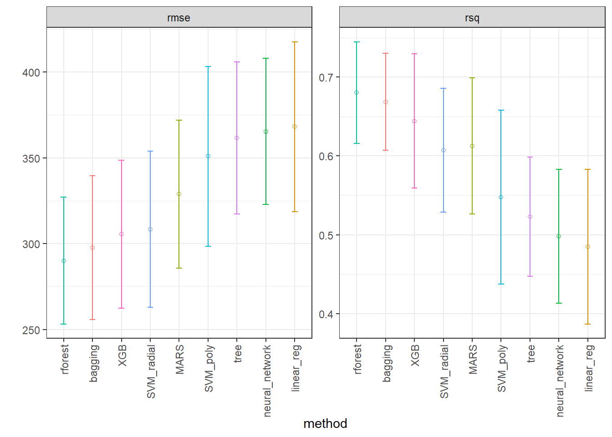
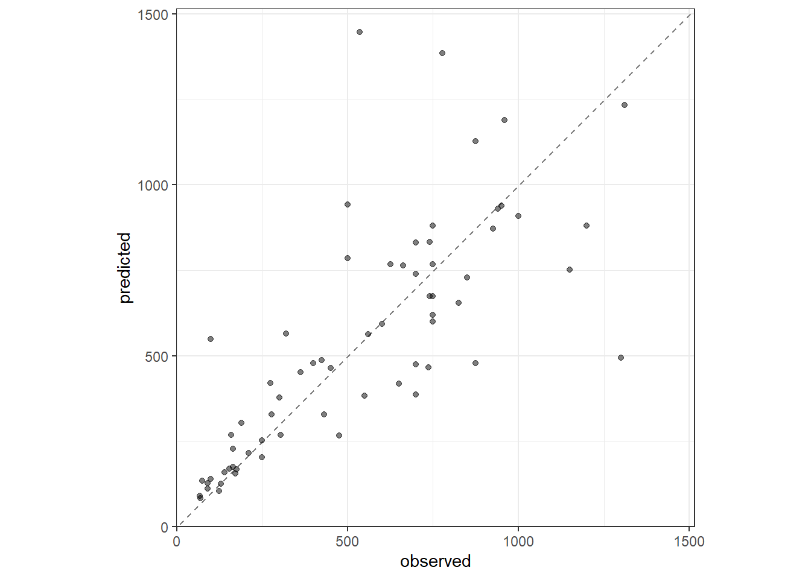
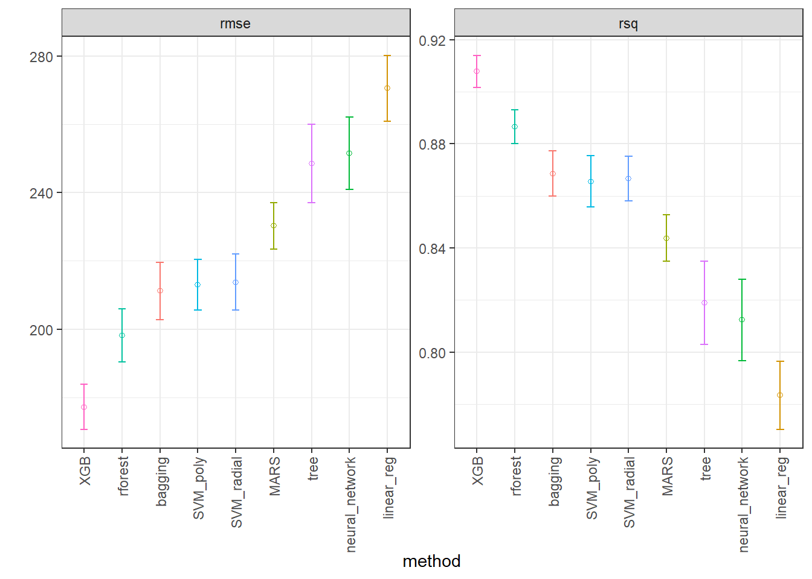
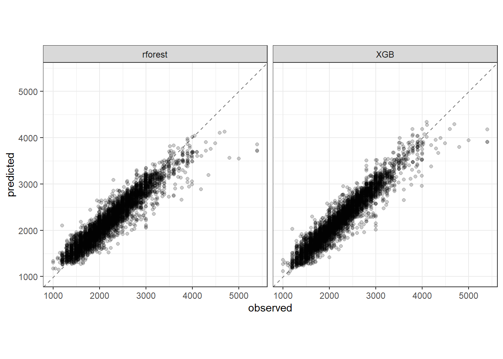

library(tidymodels)
library(modelsummary)
library(finetune)
library(dplyr)
library(baguette)Laboratório 9 - Regressão via pacote tidymodels
Exemplo: Previsão do salário de jogadores de Baisebol das ligas americanas usando pacote tidymodels
Carregando pacotes.
Leitura de dados.
data(Hitters, package = "ISLR")
dados <- na.omit(Hitters)Entendendo os dados.
dados |> glimpse()Rows: 263
Columns: 20
$ AtBat <int> 315, 479, 496, 321, 594, 185, 298, 323, 401, 574, 202, 418, …
$ Hits <int> 81, 130, 141, 87, 169, 37, 73, 81, 92, 159, 53, 113, 60, 43,…
$ HmRun <int> 7, 18, 20, 10, 4, 1, 0, 6, 17, 21, 4, 13, 0, 7, 20, 2, 8, 16…
$ Runs <int> 24, 66, 65, 39, 74, 23, 24, 26, 49, 107, 31, 48, 30, 29, 89,…
$ RBI <int> 38, 72, 78, 42, 51, 8, 24, 32, 66, 75, 26, 61, 11, 27, 75, 8…
$ Walks <int> 39, 76, 37, 30, 35, 21, 7, 8, 65, 59, 27, 47, 22, 30, 73, 15…
$ Years <int> 14, 3, 11, 2, 11, 2, 3, 2, 13, 10, 9, 4, 6, 13, 15, 5, 8, 1,…
$ CAtBat <int> 3449, 1624, 5628, 396, 4408, 214, 509, 341, 5206, 4631, 1876…
$ CHits <int> 835, 457, 1575, 101, 1133, 42, 108, 86, 1332, 1300, 467, 392…
$ CHmRun <int> 69, 63, 225, 12, 19, 1, 0, 6, 253, 90, 15, 41, 4, 36, 177, 5…
$ CRuns <int> 321, 224, 828, 48, 501, 30, 41, 32, 784, 702, 192, 205, 309,…
$ CRBI <int> 414, 266, 838, 46, 336, 9, 37, 34, 890, 504, 186, 204, 103, …
$ CWalks <int> 375, 263, 354, 33, 194, 24, 12, 8, 866, 488, 161, 203, 207, …
$ League <fct> N, A, N, N, A, N, A, N, A, A, N, N, A, N, N, A, N, N, A, N, …
$ Division <fct> W, W, E, E, W, E, W, W, E, E, W, E, E, E, W, W, W, E, W, W, …
$ PutOuts <int> 632, 880, 200, 805, 282, 76, 121, 143, 0, 238, 304, 211, 121…
$ Assists <int> 43, 82, 11, 40, 421, 127, 283, 290, 0, 445, 45, 11, 151, 45,…
$ Errors <int> 10, 14, 3, 4, 25, 7, 9, 19, 0, 22, 11, 7, 6, 8, 10, 16, 2, 5…
$ Salary <dbl> 475.000, 480.000, 500.000, 91.500, 750.000, 70.000, 100.000,…
$ NewLeague <fct> N, A, N, N, A, A, A, N, A, A, N, N, A, N, N, A, N, N, N, N, …Estatisticas descritivas.
datasummary_skim(dados)| Unique | Missing Pct. | Mean | SD | Min | Median | Max | Histogram | |
|---|---|---|---|---|---|---|---|---|
| AtBat | 209 | 0 | 403.6 | 147.3 | 19.0 | 413.0 | 687.0 |  |
| Hits | 130 | 0 | 107.8 | 45.1 | 1.0 | 103.0 | 238.0 |  |
| HmRun | 35 | 0 | 11.6 | 8.8 | 0.0 | 9.0 | 40.0 |  |
| Runs | 92 | 0 | 54.7 | 25.5 | 0.0 | 52.0 | 130.0 |  |
| RBI | 94 | 0 | 51.5 | 25.9 | 0.0 | 47.0 | 121.0 |  |
| Walks | 87 | 0 | 41.1 | 21.7 | 0.0 | 37.0 | 105.0 |  |
| Years | 21 | 0 | 7.3 | 4.8 | 1.0 | 6.0 | 24.0 |  |
| CAtBat | 257 | 0 | 2657.5 | 2286.6 | 19.0 | 1931.0 | 14053.0 |  |
| CHits | 241 | 0 | 722.2 | 648.2 | 4.0 | 516.0 | 4256.0 |  |
| CHmRun | 129 | 0 | 69.2 | 82.2 | 0.0 | 40.0 | 548.0 |  |
| CRuns | 226 | 0 | 361.2 | 331.2 | 2.0 | 250.0 | 2165.0 |  |
| CRBI | 226 | 0 | 330.4 | 323.4 | 3.0 | 230.0 | 1659.0 |  |
| CWalks | 207 | 0 | 260.3 | 264.1 | 1.0 | 174.0 | 1566.0 |  |
| PutOuts | 199 | 0 | 290.7 | 279.9 | 0.0 | 224.0 | 1377.0 |  |
| Assists | 145 | 0 | 118.8 | 145.1 | 0.0 | 45.0 | 492.0 |  |
| Errors | 29 | 0 | 8.6 | 6.6 | 0.0 | 7.0 | 32.0 |  |
| Salary | 150 | 0 | 535.9 | 451.1 | 67.5 | 425.0 | 2460.0 |  |
| N | % | |||||||
| League | A | 139 | 52.9 | |||||
| N | 124 | 47.1 | ||||||
| Division | E | 129 | 49.0 | |||||
| W | 134 | 51.0 | ||||||
| NewLeague | A | 141 | 53.6 | |||||
| N | 122 | 46.4 |
Separando dados de treino e teste. Aqui consideramos 75% dos dados para treino do modelo, sendo estes selecionados de forma balanceada considerando a variável categórica League. Com o comando vfold_cv foi definida um particionamento dos dados em 10 dobras para validação via k-fold. Foram consideradas duas repetições.
set.seed(16)
dados_split <- initial_split(dados,
prop = 0.75,
strata = League)
dados_train <- training(dados_split)
dados_test <- testing(dados_split)
set.seed(17)
dados_folds <-
vfold_cv(v = 10, dados_train, repeats = 2)Definindo uma receita. A receita contém tratamentos a serem aplicados nos dados, além do modelo a ser previsto. Pode-se por exemlpo normalizar as variáveis numéricas e transformar em dummy as variáveis categóricas.
normalized_rec <-
recipe(Salary ~ ., data = dados_train) |>
step_normalize(all_numeric_predictors()) |>
step_dummy(all_nominal_predictors()) Definindo os métodos de regressão a serem testados. Deve-se definir os hiperparâmetros a serem testados e o pacote (engine), uma vez que geralmente há várias opções de pacotes no R para um mesmo modelo.
linear_reg_spec <-
linear_reg(penalty = tune(), mixture = tune()) |>
set_engine("glmnet")
tree_spec <- decision_tree(tree_depth = tune(), min_n = tune(), cost_complexity = tune()) |>
set_engine("rpart") |>
set_mode("regression")
bag_cart_spec <-
bag_tree(tree_depth = tune(), min_n = tune(), cost_complexity = tune()) |>
set_engine("rpart") |>
set_mode("regression")
rforest_spec <- rand_forest(mtry = tune(), min_n = tune(), trees = tune()) |>
set_engine("ranger") |>
set_mode("regression")
xgb_spec <- # evolution of GBM
boost_tree(tree_depth = tune(), learn_rate = tune(), loss_reduction = tune(),
min_n = tune(), sample_size = tune(), trees = tune()) |>
set_engine("xgboost") |>
set_mode("regression")
svm_r_spec <-
svm_rbf(cost = tune(), rbf_sigma = tune()) |>
set_engine("kernlab") |>
set_mode("regression")
svm_p_spec <-
svm_poly(cost = tune(), degree = tune()) |>
set_engine("kernlab") |>
set_mode("regression")
mars_spec <- # method similar to GAM
mars(prod_degree = tune()) %>%
set_engine("earth") %>%
set_mode("regression")
nnet_spec <-
mlp(hidden_units = tune(), penalty = tune(), epochs = tune()) |>
set_engine("nnet", MaxNWts = 2600) |>
set_mode("regression")
nnet_param <-
nnet_spec |>
extract_parameter_set_dials() |>
update(hidden_units = hidden_units(c(1, 27)))Definindo o worflow, o qual contém os modelos e a receita.
normalized <-
workflow_set(
preproc = list(normalized = normalized_rec),
models = list(linear_reg = linear_reg_spec,
tree = tree_spec,
bagging = bag_cart_spec,
rforest = rforest_spec,
XGB = xgb_spec,
SVM_radial = svm_r_spec,
SVM_poly = svm_p_spec,
MARS = mars_spec,
neural_network = nnet_spec)
)
normalized# A workflow set/tibble: 9 × 4
wflow_id info option result
<chr> <list> <list> <list>
1 normalized_linear_reg <tibble [1 × 4]> <opts[0]> <list [0]>
2 normalized_tree <tibble [1 × 4]> <opts[0]> <list [0]>
3 normalized_bagging <tibble [1 × 4]> <opts[0]> <list [0]>
4 normalized_rforest <tibble [1 × 4]> <opts[0]> <list [0]>
5 normalized_XGB <tibble [1 × 4]> <opts[0]> <list [0]>
6 normalized_SVM_radial <tibble [1 × 4]> <opts[0]> <list [0]>
7 normalized_SVM_poly <tibble [1 × 4]> <opts[0]> <list [0]>
8 normalized_MARS <tibble [1 × 4]> <opts[0]> <list [0]>
9 normalized_neural_network <tibble [1 × 4]> <opts[0]> <list [0]>Fazendo modificação no nome dos modelos para simplificá-los.
all_workflows <-
bind_rows(normalized) |>
# Make the workflow ID's a little more simple:
mutate(wflow_id = gsub("(simple_)|(normalized_)", "", wflow_id))
all_workflows# A workflow set/tibble: 9 × 4
wflow_id info option result
<chr> <list> <list> <list>
1 linear_reg <tibble [1 × 4]> <opts[0]> <list [0]>
2 tree <tibble [1 × 4]> <opts[0]> <list [0]>
3 bagging <tibble [1 × 4]> <opts[0]> <list [0]>
4 rforest <tibble [1 × 4]> <opts[0]> <list [0]>
5 XGB <tibble [1 × 4]> <opts[0]> <list [0]>
6 SVM_radial <tibble [1 × 4]> <opts[0]> <list [0]>
7 SVM_poly <tibble [1 × 4]> <opts[0]> <list [0]>
8 MARS <tibble [1 × 4]> <opts[0]> <list [0]>
9 neural_network <tibble [1 × 4]> <opts[0]> <list [0]>Realizando grid search e validação cruzada. Deve-se definir o número de combinações no grid, além de fornecer o workflow e as dobras para validação cruzada, ambos definidos anteriormente.
race_ctrl <-
control_race(
save_pred = TRUE,
parallel_over = "everything",
save_workflow = TRUE
)
race_results <-
all_workflows |>
workflow_map(
"tune_race_anova",
seed = 1503,
resamples = dados_folds,
grid = 25,
control = race_ctrl
)→ A | warning: A correlation computation is required, but `estimate` is constant and has 0 standard deviation, resulting in a divide by 0 error. `NA` will be returned.There were issues with some computations A: x1There were issues with some computations A: x2There were issues with some computations A: x3
There were issues with some computations A: x3Extraindo métricas para avaliar os resultados da validação cruzada.
collect_metrics(race_results) |>
filter(.metric == "rmse") |>
arrange(mean)# A tibble: 50 × 9
wflow_id .config preproc model .metric .estimator mean n std_err
<chr> <chr> <chr> <chr> <chr> <chr> <dbl> <int> <dbl>
1 rforest Preprocessor1_… recipe rand… rmse standard 290. 20 18.9
2 rforest Preprocessor1_… recipe rand… rmse standard 290. 20 19.6
3 rforest Preprocessor1_… recipe rand… rmse standard 291. 20 20.0
4 rforest Preprocessor1_… recipe rand… rmse standard 292. 20 20.2
5 rforest Preprocessor1_… recipe rand… rmse standard 293. 20 19.2
6 rforest Preprocessor1_… recipe rand… rmse standard 294. 20 19.5
7 rforest Preprocessor1_… recipe rand… rmse standard 294. 20 20.4
8 rforest Preprocessor1_… recipe rand… rmse standard 295. 20 19.6
9 rforest Preprocessor1_… recipe rand… rmse standard 295. 20 20.5
10 rforest Preprocessor1_… recipe rand… rmse standard 296. 20 19.7
# ℹ 40 more rowscollect_metrics(race_results) |>
filter(.metric == "rsq") |>
arrange(desc(mean))# A tibble: 50 × 9
wflow_id .config preproc model .metric .estimator mean n std_err
<chr> <chr> <chr> <chr> <chr> <chr> <dbl> <int> <dbl>
1 rforest Preprocessor1_… recipe rand… rsq standard 0.680 20 0.0330
2 rforest Preprocessor1_… recipe rand… rsq standard 0.680 20 0.0329
3 rforest Preprocessor1_… recipe rand… rsq standard 0.679 20 0.0316
4 rforest Preprocessor1_… recipe rand… rsq standard 0.677 20 0.0324
5 rforest Preprocessor1_… recipe rand… rsq standard 0.677 20 0.0319
6 rforest Preprocessor1_… recipe rand… rsq standard 0.677 20 0.0316
7 rforest Preprocessor1_… recipe rand… rsq standard 0.677 20 0.0324
8 rforest Preprocessor1_… recipe rand… rsq standard 0.673 20 0.0326
9 rforest Preprocessor1_… recipe rand… rsq standard 0.672 20 0.0320
10 rforest Preprocessor1_… recipe rand… rsq standard 0.670 20 0.0313
# ℹ 40 more rowsVisualizando desempenho dos métodos.
IC_rmse <- collect_metrics(race_results) |>
filter(.metric == "rmse") |>
group_by(wflow_id) |>
filter(mean == min(mean)) |>
group_by(wflow_id) |>
arrange(mean) |>
ungroup()
IC_r2 <- collect_metrics(race_results) |>
filter(.metric == "rsq") |>
group_by(wflow_id) |>
filter(mean == max(mean)) |>
group_by(wflow_id) |>
arrange(desc(mean)) |>
ungroup()
IC <- bind_rows(IC_rmse, IC_r2)
ggplot(IC, aes(x = factor(wflow_id, levels = unique(wflow_id)), y = mean)) +
facet_wrap(~.metric, scales = "free") +
geom_point(stat="identity", aes(color = wflow_id), pch = 1) +
geom_errorbar(stat="identity", aes(color = wflow_id,
ymin=mean-1.96*std_err,
ymax=mean+1.96*std_err), width=.2) +
labs(y = "", x = "method") + theme_bw() +
theme(legend.position = "none",
axis.text.x = element_text(angle = 90, vjust = 0.5, hjust=1))
Obtendo níveis ótimos dos hiperparâmetros do melhor modelo.
best_rmse <-
race_results |>
extract_workflow_set_result("rforest") |>
select_best(metric = "rmse")
best_rmse# A tibble: 1 × 4
mtry trees min_n .config
<int> <int> <int> <chr>
1 4 1144 5 Preprocessor1_Model24rforest_test_results <-
race_results |>
extract_workflow("rforest") |>
finalize_workflow(best_rmse) |>
last_fit(split = dados_split)
collect_metrics(rforest_test_results)# A tibble: 2 × 4
.metric .estimator .estimate .config
<chr> <chr> <dbl> <chr>
1 rmse standard 232. Preprocessor1_Model1
2 rsq standard 0.576 Preprocessor1_Model1Plotando resultados previsto versus observados para os dados de teste.
test_results <- rbind(rforest_test_results |>
collect_predictions())
test_results |>
ggplot(aes(x = Salary, y = .pred)) +
geom_abline(color = "gray50", lty = 2) +
geom_point(alpha = 0.5) +
coord_obs_pred() +
labs(x = "observed", y = "predicted") +
theme_bw()
Exemplo 2: Previsão do preço de computadores usando tidymodels
library(Ecdat)Leitura de dados.
data(Computers)
dados2 <- na.omit(Computers)Entendendo os dados.
dados2 |> glimpse()Rows: 6,259
Columns: 10
$ price <dbl> 1499, 1795, 1595, 1849, 3295, 3695, 1720, 1995, 2225, 2575, 21…
$ speed <dbl> 25, 33, 25, 25, 33, 66, 25, 50, 50, 50, 33, 66, 50, 25, 50, 50…
$ hd <dbl> 80, 85, 170, 170, 340, 340, 170, 85, 210, 210, 170, 210, 130, …
$ ram <dbl> 4, 2, 4, 8, 16, 16, 4, 2, 8, 4, 8, 8, 4, 8, 8, 4, 2, 4, 4, 8, …
$ screen <dbl> 14, 14, 15, 14, 14, 14, 14, 14, 14, 15, 15, 14, 14, 14, 14, 14…
$ cd <fct> no, no, no, no, no, no, yes, no, no, no, no, no, no, no, no, n…
$ multi <fct> no, no, no, no, no, no, no, no, no, no, no, no, no, no, no, no…
$ premium <fct> yes, yes, yes, no, yes, yes, yes, yes, yes, yes, yes, yes, yes…
$ ads <dbl> 94, 94, 94, 94, 94, 94, 94, 94, 94, 94, 94, 94, 94, 94, 94, 94…
$ trend <dbl> 1, 1, 1, 1, 1, 1, 1, 1, 1, 1, 1, 1, 1, 1, 1, 1, 1, 1, 1, 1, 1,…Estatísticas descritivas.
datasummary_skim(dados2)| Unique | Missing Pct. | Mean | SD | Min | Median | Max | Histogram | |
|---|---|---|---|---|---|---|---|---|
| price | 808 | 0 | 2219.6 | 580.8 | 949.0 | 2144.0 | 5399.0 |  |
| speed | 6 | 0 | 52.0 | 21.2 | 25.0 | 50.0 | 100.0 |  |
| hd | 59 | 0 | 416.6 | 258.5 | 80.0 | 340.0 | 2100.0 |  |
| ram | 6 | 0 | 8.3 | 5.6 | 2.0 | 8.0 | 32.0 |  |
| screen | 3 | 0 | 14.6 | 0.9 | 14.0 | 14.0 | 17.0 |  |
| ads | 34 | 0 | 221.3 | 74.8 | 39.0 | 246.0 | 339.0 |  |
| trend | 35 | 0 | 15.9 | 7.9 | 1.0 | 16.0 | 35.0 |  |
| N | % | |||||||
| cd | no | 3351 | 53.5 | |||||
| yes | 2908 | 46.5 | ||||||
| multi | no | 5386 | 86.1 | |||||
| yes | 873 | 13.9 | ||||||
| premium | no | 612 | 9.8 | |||||
| yes | 5647 | 90.2 |
Criando coluna com combinações das variáveis categóricas que tem níveis desbalanceados.
dados2 <- dados2 |>
mutate(multi_premium = paste(multi, premium,
sep = '_'))Separando dados de treino e teste.
set.seed(16)
dados_split2 <- initial_split(dados2,
prop = 0.25,
strata = multi_premium)
dados_train2 <- training(dados_split2)
dados_test2 <- testing(dados_split2)
set.seed(17)
dados_folds2 <-
vfold_cv(v = 10, dados_train2, repeats = 2)Receita.
normalized_rec2 <-
recipe(price ~ speed + hd + ram + screen + cd + multi + premium + ads + trend,
data = dados_train2) |>
step_normalize(all_numeric_predictors()) |>
step_dummy(all_nominal_predictors()) Workflow.
normalized2 <-
workflow_set(
preproc = list(normalized = normalized_rec2),
models = list(linear_reg = linear_reg_spec,
tree = tree_spec,
bagging = bag_cart_spec,
rforest = rforest_spec,
XGB = xgb_spec,
SVM_radial = svm_r_spec,
SVM_poly = svm_p_spec,
MARS = mars_spec,
neural_network = nnet_spec)
)
normalized2# A workflow set/tibble: 9 × 4
wflow_id info option result
<chr> <list> <list> <list>
1 normalized_linear_reg <tibble [1 × 4]> <opts[0]> <list [0]>
2 normalized_tree <tibble [1 × 4]> <opts[0]> <list [0]>
3 normalized_bagging <tibble [1 × 4]> <opts[0]> <list [0]>
4 normalized_rforest <tibble [1 × 4]> <opts[0]> <list [0]>
5 normalized_XGB <tibble [1 × 4]> <opts[0]> <list [0]>
6 normalized_SVM_radial <tibble [1 × 4]> <opts[0]> <list [0]>
7 normalized_SVM_poly <tibble [1 × 4]> <opts[0]> <list [0]>
8 normalized_MARS <tibble [1 × 4]> <opts[0]> <list [0]>
9 normalized_neural_network <tibble [1 × 4]> <opts[0]> <list [0]>all_workflows2 <-
bind_rows(normalized2) |>
# Make the workflow ID's a little more simple:
mutate(wflow_id = gsub("(simple_)|(normalized_)", "", wflow_id))
all_workflows2# A workflow set/tibble: 9 × 4
wflow_id info option result
<chr> <list> <list> <list>
1 linear_reg <tibble [1 × 4]> <opts[0]> <list [0]>
2 tree <tibble [1 × 4]> <opts[0]> <list [0]>
3 bagging <tibble [1 × 4]> <opts[0]> <list [0]>
4 rforest <tibble [1 × 4]> <opts[0]> <list [0]>
5 XGB <tibble [1 × 4]> <opts[0]> <list [0]>
6 SVM_radial <tibble [1 × 4]> <opts[0]> <list [0]>
7 SVM_poly <tibble [1 × 4]> <opts[0]> <list [0]>
8 MARS <tibble [1 × 4]> <opts[0]> <list [0]>
9 neural_network <tibble [1 × 4]> <opts[0]> <list [0]>Realizando grid search e validação cruzada.
race_results2 <-
all_workflows2 |>
workflow_map(
"tune_race_anova",
seed = 1503,
resamples = dados_folds2,
grid = 25,
control = race_ctrl
)→ A | warning: A correlation computation is required, but `estimate` is constant and has 0 standard deviation, resulting in a divide by 0 error. `NA` will be returned.There were issues with some computations A: x1There were issues with some computations A: x2There were issues with some computations A: x3There were issues with some computations A: x8There were issues with some computations A: x9There were issues with some computations A: x10There were issues with some computations A: x14There were issues with some computations A: x15There were issues with some computations A: x16There were issues with some computations A: x17There were issues with some computations A: x18
There were issues with some computations A: x18Extraindo métricas para avaliar os resultados da validação cruzada.
collect_metrics(race_results2) |>
filter(.metric == "rmse") |>
arrange(mean)# A tibble: 35 × 9
wflow_id .config preproc model .metric .estimator mean n std_err
<chr> <chr> <chr> <chr> <chr> <chr> <dbl> <int> <dbl>
1 XGB Preproce… recipe boos… rmse standard 177. 20 3.39
2 rforest Preproce… recipe rand… rmse standard 198. 20 3.94
3 bagging Preproce… recipe bag_… rmse standard 211. 20 4.28
4 SVM_poly Preproce… recipe svm_… rmse standard 213. 20 3.78
5 SVM_radial Preproce… recipe svm_… rmse standard 214. 20 4.18
6 SVM_poly Preproce… recipe svm_… rmse standard 215. 20 4.13
7 SVM_poly Preproce… recipe svm_… rmse standard 217. 20 5.12
8 MARS Preproce… recipe mars rmse standard 230. 20 3.47
9 tree Preproce… recipe deci… rmse standard 248. 20 5.87
10 neural_network Preproce… recipe mlp rmse standard 252. 20 5.40
# ℹ 25 more rowscollect_metrics(race_results2) |>
filter(.metric == "rsq") |>
arrange(desc(mean))# A tibble: 35 × 9
wflow_id .config preproc model .metric .estimator mean n std_err
<chr> <chr> <chr> <chr> <chr> <chr> <dbl> <int> <dbl>
1 XGB Preproce… recipe boos… rsq standard 0.908 20 0.00317
2 rforest Preproce… recipe rand… rsq standard 0.887 20 0.00330
3 bagging Preproce… recipe bag_… rsq standard 0.869 20 0.00446
4 SVM_radial Preproce… recipe svm_… rsq standard 0.867 20 0.00438
5 SVM_poly Preproce… recipe svm_… rsq standard 0.866 20 0.00505
6 SVM_poly Preproce… recipe svm_… rsq standard 0.864 20 0.00520
7 SVM_poly Preproce… recipe svm_… rsq standard 0.861 20 0.00600
8 MARS Preproce… recipe mars rsq standard 0.844 20 0.00454
9 tree Preproce… recipe deci… rsq standard 0.819 20 0.00821
10 neural_network Preproce… recipe mlp rsq standard 0.812 20 0.00794
# ℹ 25 more rowsVisualizando desempenho dos métodos.
IC_rmse2 <- collect_metrics(race_results2) |>
filter(.metric == "rmse") |>
group_by(wflow_id) |>
filter(mean == min(mean)) |>
group_by(wflow_id) |>
arrange(mean) |>
ungroup()
IC_r22 <- collect_metrics(race_results2) |>
filter(.metric == "rsq") |>
group_by(wflow_id) |>
filter(mean == max(mean)) |>
group_by(wflow_id) |>
arrange(desc(mean)) |>
ungroup()
IC2 <- bind_rows(IC_rmse2, IC_r22)
ggplot(IC2, aes(x = factor(wflow_id, levels = unique(wflow_id)), y = mean)) +
facet_wrap(~.metric, scales = "free") +
geom_point(stat="identity", aes(color = wflow_id), pch = 1) +
geom_errorbar(stat="identity", aes(color = wflow_id,
ymin=mean-1.96*std_err,
ymax=mean+1.96*std_err), width=.2) +
labs(y = "", x = "method") + theme_bw() +
theme(legend.position = "none",
axis.text.x = element_text(angle = 90, vjust = 0.5, hjust=1))
Obtendo níveis ótimos dos hiperparâmetros do melhor modelo.
best_rmse2 <-
race_results2 |>
extract_workflow_set_result("XGB") |>
select_best(metric = "rmse")
best_rmse2# A tibble: 1 × 7
trees min_n tree_depth learn_rate loss_reduction sample_size .config
<int> <int> <int> <dbl> <dbl> <dbl> <chr>
1 1102 6 13 0.0107 0.00000000359 0.618 Preprocessor1_Mo…XGB_test_results <-
race_results2 |>
extract_workflow("XGB") |>
finalize_workflow(best_rmse2) |>
last_fit(split = dados_split2)
collect_metrics(XGB_test_results)# A tibble: 2 × 4
.metric .estimator .estimate .config
<chr> <chr> <dbl> <chr>
1 rmse standard 176. Preprocessor1_Model1
2 rsq standard 0.908 Preprocessor1_Model1Plotando resultados previsto versus observados para os dados de teste dos dois melhores métodos.
best_rmse2_2 <-
race_results2 |>
extract_workflow_set_result("rforest") |>
select_best(metric = "rmse")
best_rmse2_2# A tibble: 1 × 4
mtry trees min_n .config
<int> <int> <int> <chr>
1 5 601 3 Preprocessor1_Model07rf_test_results <-
race_results2 |>
extract_workflow("rforest") |>
finalize_workflow(best_rmse2_2) |>
last_fit(split = dados_split2)
collect_metrics(rf_test_results)# A tibble: 2 × 4
.metric .estimator .estimate .config
<chr> <chr> <dbl> <chr>
1 rmse standard 197. Preprocessor1_Model1
2 rsq standard 0.888 Preprocessor1_Model1test_results2 <- rbind(XGB_test_results |>
collect_predictions(),
rf_test_results |>
collect_predictions())
test_results2$method <- c(rep("XGB", nrow(XGB_test_results |>
collect_predictions())),
rep("rforest", nrow(rf_test_results |>
collect_predictions())))
test_results2 |>
ggplot(aes(x = price, y = .pred)) +
geom_abline(color = "gray50", lty = 2) +
geom_point(alpha = 0.2) +
facet_grid(col = vars(method)) +
coord_obs_pred() +
labs(x = "observed", y = "predicted") +
theme_bw()
Modelo final.
XGB_final <- race_results2 |>
extract_workflow("XGB") |>
finalize_workflow(best_rmse2)
XGB_final══ Workflow ════════════════════════════════════════════════════════════════════
Preprocessor: Recipe
Model: boost_tree()
── Preprocessor ────────────────────────────────────────────────────────────────
2 Recipe Steps
• step_normalize()
• step_dummy()
── Model ───────────────────────────────────────────────────────────────────────
Boosted Tree Model Specification (regression)
Main Arguments:
trees = 1102
min_n = 6
tree_depth = 13
learn_rate = 0.0106517560007563
loss_reduction = 3.59446610834599e-09
sample_size = 0.617716762662865
Computational engine: xgboost